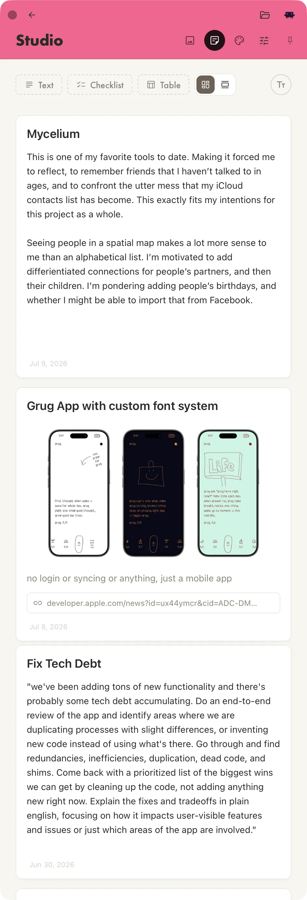

Notes
V.0.7
This might be my most used Tool. It was the second thing that I made. I was writing in a combo of Apple Notes and Stickies, and that really wasn't working out. I love Apple Notes, but I just needed my own notebook app that could feasibly have all the customization I would ever want.
It was really satisfying making my own Table feature. It's just a super plain table where you can add sum columns. Because that's really the most common formula that I use. It's silly to have a whole spreadsheet when I just need to sum.